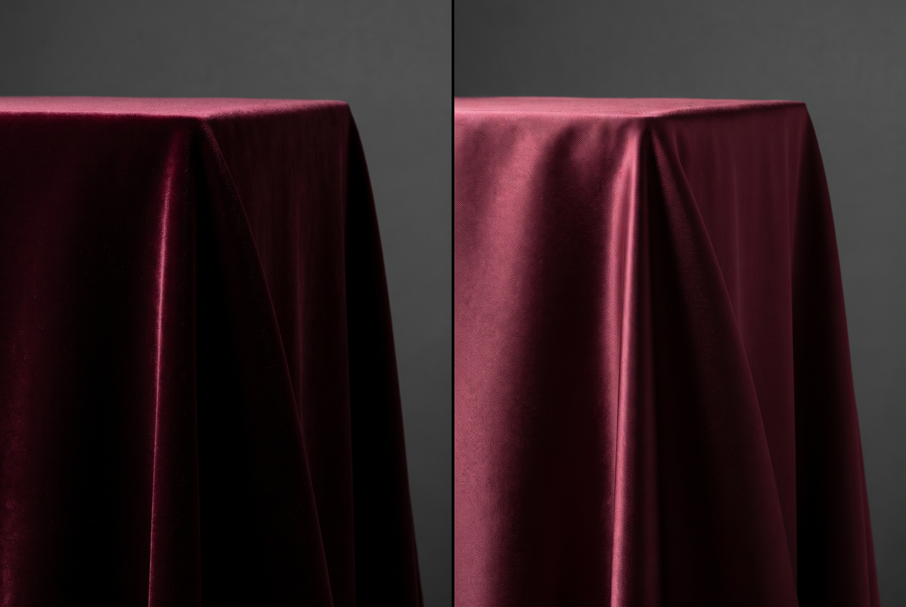
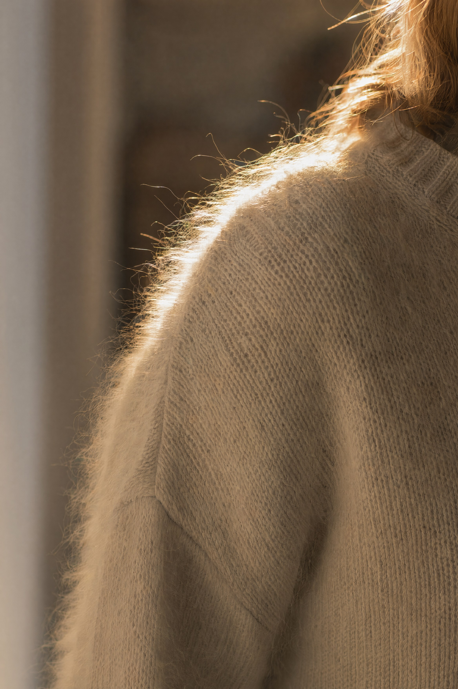
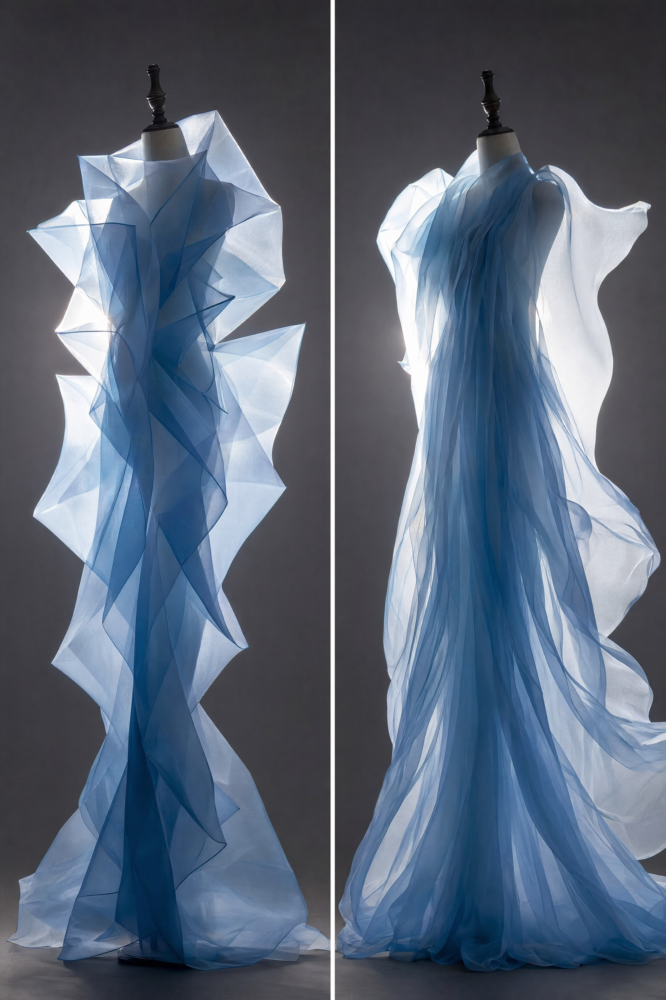

"柔软"不是一种感觉，是两条互不相同的光学路径——搞混它们，你就会写 velvet 得到绸缎
先说清一件容易被含糊过去的事：视觉上的"软"从来不是靠模糊或低对比造出来的。把图调糊只会得到一张糊图，不会得到一件羊绒衫。真正让观众判定"这东西是软的"的，是两组具体的光学线索，它们各自有各自的物理机制，也各自有各自的提示词写法。
| 路径 A：纤维绒毛 | 路径 B：半透明织物 | |
|---|---|---|
| 代表材质 | 羊绒、马海毛、天鹅绒、磨毛棉、毛巾布 | 欧根纱、雪纺、蕾丝、薄丝、细棉布 |
| 核心机制 | 表面立着无数根细纤维，逆光时每根纤维边缘都发生前向散射 | 织物太薄，光直接穿过去，织物变成二次光源 |
| 画面特征 | 轮廓线"发毛"、有一圈光晕；表面高粗糙度、无明确高光 | 亮度从背后透过来；重叠处颜色加深；能看见后面的东西 |
| 需要的光 | 逆光/侧逆光（否则绒毛完全不可见） | 背光（正面打光的薄纱看起来就是普通布） |
| 提示词锚点 | fuzzy fiber rim light, halo of loose fibers along the edge | backlit sheer fabric, light passing through, layered translucency |
这是本章最重要的一句话，也是新手最容易漏的一条。
绒毛的边缘光来自光从纤维背后穿过纤维边缘；薄纱的透光来自光从布背后穿过布。两者都要求光源在被摄物的后方或侧后方。
如果你写了一堆 soft、fluffy、sheer，却给了个正面柔光，模型只能给你一块颜色对、形状对、但完全没有"软"的信息的布。柔软是逆光的产物，不是柔光的产物。
下面这些材质在提示词里之所以要分开写，不是因为名字不同，而是因为它们的纤维长度、纤维朝向、纤维密度三项不同，成像因此不同。
| 材质 | 表面结构 | 关键视觉特征 | 提示词 |
|---|---|---|---|
| 磨毛棉 / 法兰绒 | 短而乱的起绒，纤维极短 | 没有边缘光晕，只是把所有高光彻底吃掉，呈粉状哑光 | brushed cotton flannel, chalky matte surface, no sheen |
| 羊绒 cashmere | 极细纤维，短绒，柔和起球 | 轮廓有一层薄薄的柔毛边；表面呈奶油般的漫反射 | fine cashmere knit, soft downy halo along the edges, creamy diffuse surface |
| 马海毛 mohair | 长而卷的粗纤维，向外炸开 | 轮廓线彻底消失在一团半透明的毛里，逆光下最戏剧 | mohair sweater, long fluffy fibers glowing in backlight, blurred fuzzy silhouette |
| 天鹅绒 velvet | 短绒直立且整齐（切绒工艺） | 视角依赖的明暗突变，见下节 | 见下节 |
| 灯芯绒 corduroy | 绒毛被组织成平行的凸起条纹 | 条纹方向产生规律的明暗带，是各向异性的宏观版 | corduroy with vertical ribbed wales, alternating light and shadow bands along the ridges |
| 毛巾布 terry | 成环的线圈，中等长度 | 颗粒感明显的凹凸，阴影落在环与环之间 | terry cloth with visible looped pile, small self-shadowing bumps |
天鹅绒的绒毛是直立的，这带来一个别的材质没有的现象：光沿着绒毛射进去、在绒毛之间多次反弹后，倾向于沿着接近入射的方向返回，即逆向反射（retroreflection）。而当你从侧面看这片绒毛时，看到的是绒毛的侧壁，遮挡多、返回少。
后果是天鹅绒的明暗分布跟别的布完全相反：普通布是"正对光的地方最亮"，天鹅绒是轮廓边缘最亮、正面偏暗；而且当你或布转动时，同一块面积会在深黑与明亮之间切换。这就是丝绒看起来"有深度""会呼吸"的原因，也是渲染里 velvet / sheen 要单独做一个 BRDF 项（Ashikhmin、Charlie sheen 之类）的原因。
写提示词时，如果只写 velvet，模型有极大概率把它当成"深色有光泽的布"处理，给你绸缎。必须把逆向反射的画面结果描述出来：
deep burgundy velvet, retroreflective sheen brightest along the edges and folds where the pile turns away, dark and light-absorbing when facing the camera directly, no sharp specular highlight anywhere
其中 no sharp specular highlight anywhere 是防绸缎化的保险丝——绸缎的定义特征就是那道锐利连续的光带（见第 6 章各向异性一节），显式否定它，模型偏向绸缎的概率会明显下降。

薄织物要分开描述三件事，它们互相独立，混写就会得到平均值。
| 材质 | 透光 | 悬垂 | 褶皱形态 | 提示词 |
|---|---|---|---|---|
| 欧根纱 organza | 高 | 硬挺 | 大而挺立，像纸一样能立住，边缘锋利 | crisp organza, sheer and stiff, standing structured folds holding their shape |
| 雪纺 chiffon | 中高 | 极软 | 细密流动，随气流飘 | chiffon, fine fluid folds, floating in the air current |
| 蕾丝 lace | 镂空 | 随基布 | 重点是投影图案而非布本身 | lace casting its floral pattern as shadow on the skin beneath |
| 真丝绸缎 silk satin | 低 | 重而流动 | 大面积连续曲面，褶间过渡平滑 | silk satin, heavy fluid drape, one continuous anisotropic highlight flowing across the folds |
| 薄棉纱 voile | 中 | 软而有身骨 | 自然随意，微皱 | cotton voile, softly rumpled, gentle translucency |
不要写 flowing dress 这种含糊词，用这一对反义结构去精确控制布的性格：
stiff structured folds —— 少、大、有折角、能立住（欧根纱、厚棉、皮革、上浆布）
fluid draping folds —— 多、细、圆润、贴身垂落（雪纺、真丝、针织、黏胶）
再加一个方向词更稳：folds falling vertically under their own weight（静止的重感）vs fabric caught mid-motion, trailing behind（运动的轻感）。褶皱是布料唯一可直接被画出来的力学证据。
单层薄纱只是"半透明"，多层薄纱才产生层次。因为透射是乘性的：两层叠加后透光率相乘，密度感非线性地跳升。所以真实照片里薄纱最好看的地方永远是褶皱重叠处——那里颜色最深、最饱和，与单层区域形成天然的明暗节奏。
模型不会自动给你这个，必须写出来：
multiple overlapping layers of sheer fabric, the colour deepening where the layers cross, brightest where only a single layer catches the backlight
把第 6 章的物理和本章的两条路径合起来，柔软材质的标准布光是一大一小、一前一后：
large soft key light from camera left, a small strong backlight from behind and above the subject slightly overexposed, dark background, one-and-a-half stop separation between subject and background
close-up of a person's shoulder and upper arm in an oversized knit sweater, low winter sun from behind and slightly above, 3000K, long loose mohair fibers standing out from the surface and glowing as a translucent halo along the entire silhouette, chalky matte diffuse surface with no specular highlight, soft fill from a white wall on camera left, dark unlit interior behind, 90mm, f/2.8, framed on the shoulder seam
模型：MJ v8.1 · 画幅 4:5 · 无负面词。
三个承重词：fibers standing out from the surface 建立绒毛结构；translucent halo along the silhouette 是前向散射的画面结果；no specular highlight 挡住模型把毛衣画成光滑针织的倾向。dark unlit interior behind 保证光晕看得见。

version A — organza a garment sculpture on a mannequin, sheer crisp organza in pale ice blue, stiff structured folds standing away from the body and holding sharp edges, strong backlight passing through the single layers, colour deepening to saturated blue where the folds overlap, dark grey seamless background, 85mm, f/8, full length version B — chiffon the same garment in silk chiffon, fine fluid folds falling vertically under their own weight, fabric drifting slightly in a breeze, trailing edges catching the backlight, same lighting and framing
模型：FLUX.2 · 画幅 2:3。
两条只差三处：折的形态（stiff structured vs fine fluid）、受力表现（standing away vs falling under their own weight）、运动状态（静止 vs drifting in a breeze）。不要靠材质名去区分布料，靠这三处力学描述去区分——模型对"布怎么动"的响应比对布料名称稳定得多。

a folded length of deep emerald velvet draped over a wooden block, single large softbox from behind and to the right, 4800K, retroreflective sheen at its brightest along the fold edges and the rim where the pile turns away from the camera, the flat faces reading as deep light-absorbing darkness, no sharp specular band anywhere on the fabric, fine dust of individual pile fibers catching the backlight, 100mm macro, f/11, three-quarter overhead angle, black background
模型：Nano Banana Pro · 画幅 3:2。
brightest along the fold edges … the flat faces reading as deep darkness 这一组是把逆向反射的反常明暗分布直接写成画面指令，这比写十次 velvet 都有效。末行的 individual pile fibers catching the backlight 补的是第 8 章会详谈的微观细节层级。
| 症状 | 成因 | 修法 |
|---|---|---|
| 写 velvet 得到光面绸缎 | velvet 在训练数据里常与晚礼服、剧院幕布共现，而那些图里布料往往被打了强侧光呈现出光泽；模型学到的是"深色贵气的布" | 显式写 retroreflective、light-absorbing、no sharp specular band，把绸缎的定义特征否定掉 |
| 写薄纱得到不透明布 | 只给了材质名没给光学行为，且用了正面光 | 把光位改成背光，并写 light passing through the fabric、the body visible as a soft shape behind the cloth |
| 毛衣画成塑料织纹 | 模型给出了针织的组织结构但没有绒毛，表面被渲染成光滑管状 | 加 loose fibers escaping from the yarn、fuzzy halo，并加逆光 |
| 软得没有形，一团糊 | 过度堆 soft/dreamy/ethereal，模型理解为整体降对比与失焦 | 删掉这些氛围词，改用结构描述（褶皱形态 + 边缘光 + 透射），并保留一处清晰对焦点 |
| 薄纱有透光但没层次 | 只有单层 | 加 overlapping layers, colour deepening where they cross |
它们和第 1 章批判的 masterpiece 是同一类问题：描述观感而非画面事实。模型对它们的响应是把整张图推向低对比、低饱和、雾化——也就是"糊"。
真正的梦幻感来自具体的物理事件：逆光下的纤维光晕、多层织物的透射叠加、空气中的微尘散射、镜头的轻微光晕溢出。写事件，别写形容词。本章所有提示词里没有一个 dreamy，但它们生成的图会比堆满 dreamy 的更梦幻。